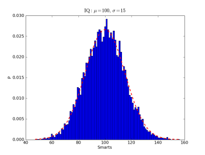

python 2D plotting library which produces publication quality figures in a variety of hardcopy formats and interactive environments across platforms. matplotlib can be used in python scripts, the python and ipython shell (ala matlab or mathematica), web application servers, and six graphical user interface toolkits.
The plots produced by maplotlib really are very pretty, on par with the plots generated by Matlab.
Installing matplotlib on Windows was a breeze. All you need is the .exe installer from their website, plus the .exe installer of NumPy - a scientific computing package used by matplotlib. That, in combination with a more advanced package named SciPy creates a quite serious contender to the title of "open-source Matlab replacement".
Unfortunately, the documentation for numpy and matplotlib isn't very comprehensive, and some of it is outdated. So the best reference is probably the source code documentation, which can be browsed online. Some random observations from a couple of hours of toying with matplotlib:- maplotlib is very suitable for interactive plotting, just like Matlab. The best support for this is with the IPython shell, but it is possible to make it work with PyCrust as well. This worked for me:
>>> import matplotlib >>> matplotlib.use('WXAgg') >>> matplotlib.interactive(True) >>> from pylab import * >>> plot([1, 2, 3])Note the directive to use the WXAgg backend. The WX backend didn't work for me, it throws an error when run from PyCrust. - The Windows .exe distribution doesn't come with the examples directory, so make sure to download it separately - it's very helpful.
- I'm using wxPython for the GUI, so naturally I'm interested in embedding plots into wxPython applications. matplotlib has some examples of how to do this. I found the wxcursor_demo and printing_in_wx examples in the user_interfaces/ directory most helpful. There seems to be a general problem with the WX backend of matplotlib, but WXAgg seems to work well.
- One of the best features of matplotlib is the interaction with the plots. There are some great demos in the widgets/ examples directory, and I wish there were more documentation on this topic, because it can make for some really great features when integrated into a GUI.